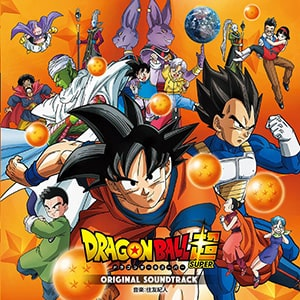

C'est un quartier traditionnel que j'ai trouvé sympa. Il y a des temples et plein de choses. Je suis sûr que vous allez découvrir le vrai Japon dans ce quartier traditionnel et authentique.
Si vous le pouvez, envisagez de visiter Asakusa à vélo pour ne pas vous limiter au seul centre névralgique. Tentez de vous perdre dans les petites ruelles adjacentes, c'est beaucoup plus amusant et vous y ferez sans doute de belles découvertes.
Alternativement, vous pouvez faire un crochet par Ueno toute proche ou la Tokyo SkyTree peu éloignée, que l'on ne peut de toute façon pas manquer dans le paysage !

Akihabara
20 mars 2019
C'est un quartier traditionnel que j'ai trouvé sympa. Il y a des temples et plein de choses. Je suis sûr que vous allez découvrir le vrai Japon dans ce quartier traditionnel et authentique.
Sur la grande artère d'Akihabara, on trouve également le Club Sega, une grande salle d'arcade sur quatre étages. Les jeux de combat y ont toujours autant la cote et il est même possible de "challenger" un joueur en pleine partie en s'installant à la borne en face de lui. À noter que, comme le plus souvent au Japon, les salles d'arcade restent fumeur.
Sapporo
10 mars janvier 2019
Sapporo est la capitale du Hokkaido, la préfecture la plus septentrionale du Japon. Située dans la splendide région centrale de l'île, la 5e ville du pays est relativement nouvelle.
Newsletter
Soyez les premiers informés de toutes nos nouveautés !